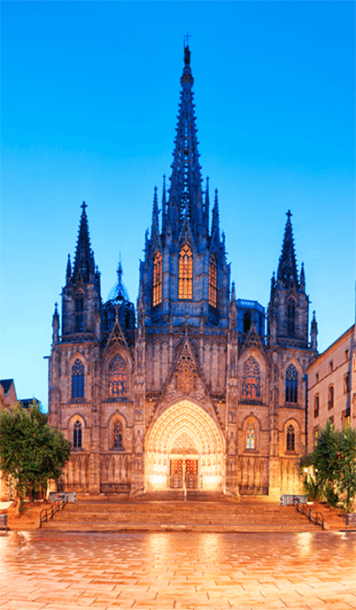

The most beautiful city
I have ever seen
Barcelona, the cosmopolitan capital of Spain’s Catalonia region, is known for its art and architecture. The fantastical Sagrada Família church and other modernist landmarks designed by Antoni Gaudí dot the city. Museu Picasso and Fundació Joan Miró feature modern art by their namesakes. City history museum MUHBA, includes several Roman archaeological sites.
Why do I Love BARCELONA?
Barcelona is located on the northeast coast of the Iberian Peninsula, facing the Mediterranean Sea, on a plain approximately 5 km (3 mi) wide limited by the mountain range of Collserola, the Llobregat river to the southwest and the Besòs river to the north.[45] This plain covers an area of 170 km2 (66 sq mi),[45] of which 101 km2 (39.0 sq mi)[46] are occupied by the city itself. It is 120 kilometres (75 miles) south of the Pyrenees and the Catalan border with France.
Tibidabo, 512 m (1,680 ft) high, offers striking views over the city[47] and is topped by the 288.4 m (946.2 ft) Torre de Collserola, a telecommunications tower that is visible from most of the city. Barcelona is peppered with small hills, most of them urbanised, that gave their name to the neighbourhoods built upon them, such as Carmel (267 metres or 876 feet), Putget (181 metres or 594 feet) and Rovira (261 metres or 856 feet). The escarpment of Montjuïc (173 metres or 568 feet), situated to the southeast, overlooks the harbour and is topped by Montjuïc castle, a fortress built in the 17–18th centuries to control the city as a replacement for the Ciutadella. Today, the fortress is a museum and Montjuïc is home to several sporting and cultural venues, as well as Barcelona's biggest park and gardens.

The Basílica i Temple Expiatori de la Sagrada Família (Catalan pronunciation: [səˈɣɾaðə fəˈmiɫiə]; Spanish: Templo Expiatorio de la Sagrada Familia; English: Basilica and Expiatory Church of the Holy Family) is a large Roman Catholic church in Barcelona, designed by Catalan architect Antoni Gaudí (1852–1926). Gaudí's work on the building is part of a UNESCO World Heritage Site,[5] and in November 2010 Pope Benedict XVI consecrated and proclaimed it a minor basilica,[6][7][8] as distinct from a cathedral, which must be the seat of a bishop.
Construction of Sagrada Família commenced in 1882 by architect Francisco Paula de Villar with Gaudí becoming involved in 1883 after Francisco resigned as the head architect.[5] Taking over the project, Gaudí transformed it with his architectural and engineering style, combining Gothic and curvilinear Art Nouveau forms. Gaudí devoted his last years to the project, and at the time of his death at age 73 in 1926, less than a quarter of the project was complete.[9]
What you should
see in BARCELONA?
The Barri Gòtic (Catalan for "Gothic Quarter") is the centre of the old city of Barcelona. Many of the buildings date from medieval times, some from as far back as the Roman settlement of Barcelona. Catalan modernista architecture (related to the movement known as Art Nouveau in the rest of Europe) developed between 1885 and 1950 and left an important legacy in Barcelona. Several of these buildings are World Heritage Sites. Especially remarkable is the work of architect Antoni Gaudí, which can be seen throughout the city. His best-known work is the immense but still unfinished church of the Sagrada Família, which has been under construction since 1882 and is still financed by private donations. As of 2015, completion is planned for 2026.[54]